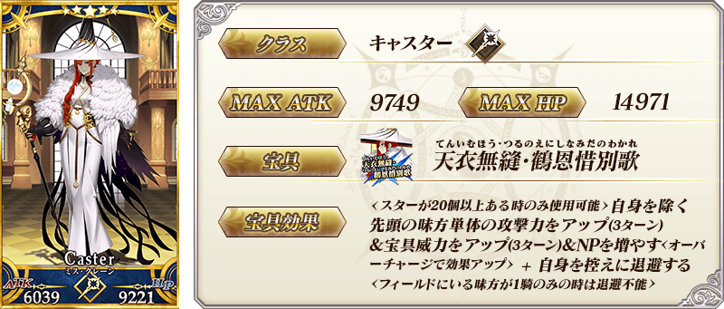
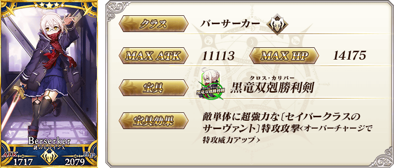
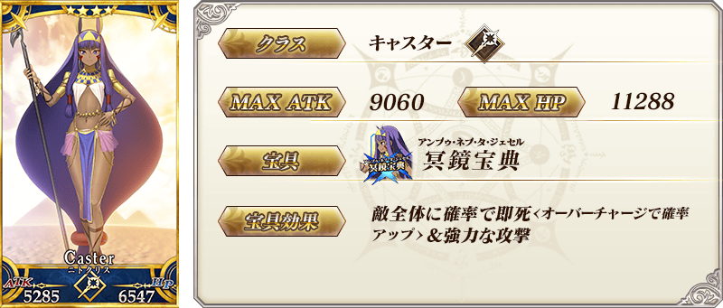
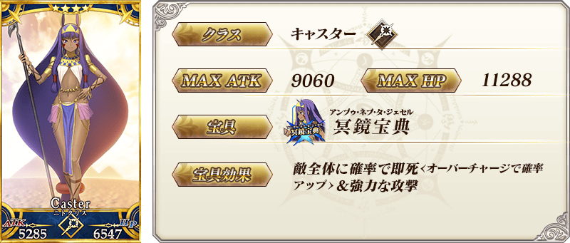
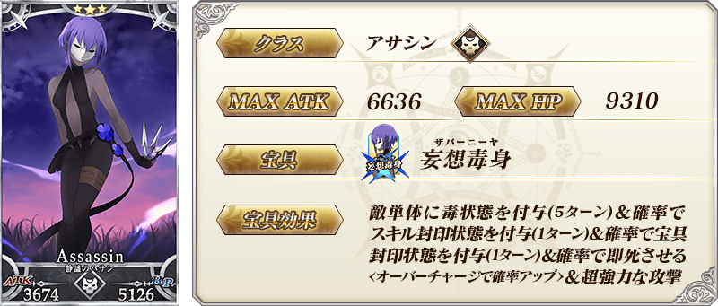
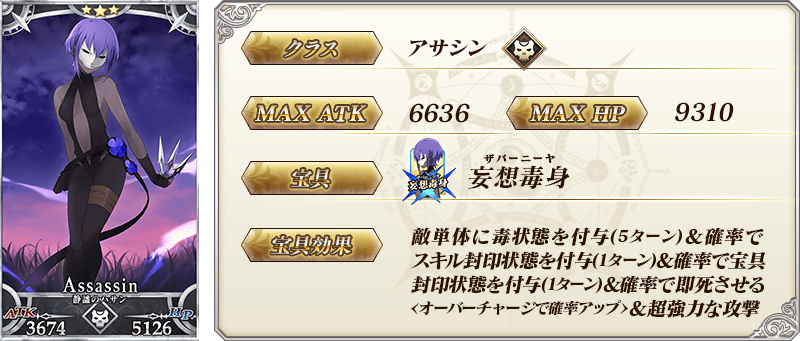
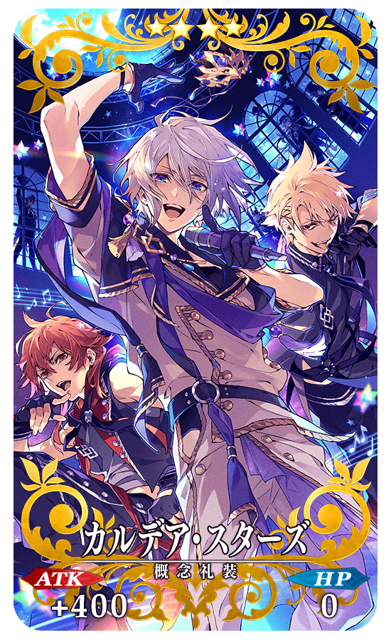
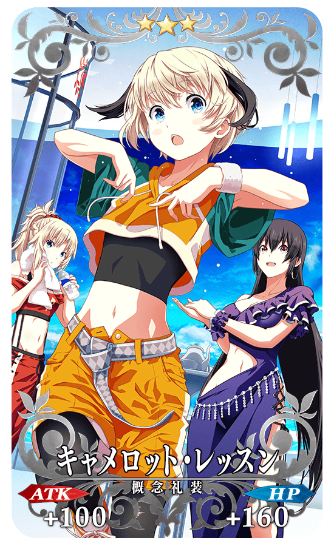
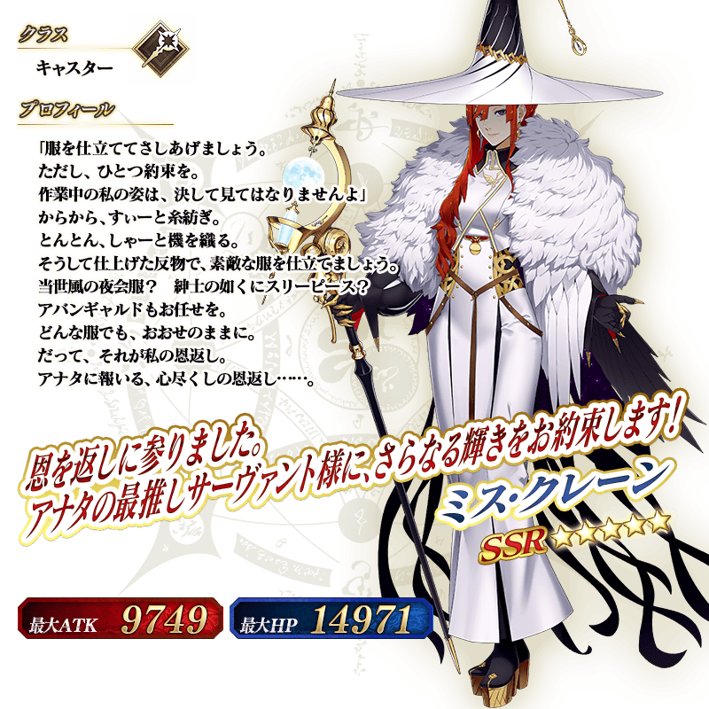
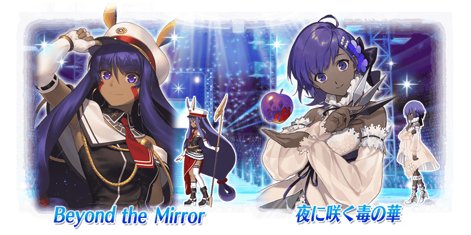

◆「FGO Waltz in the MOONLIGHT/LOSTROOM聯動活動Pick Up召喚(每日交替)」期間◆
期間:2021年4月26日(一) 19:30～5月10日(一) 11:59
舉辦期間限定「FGO Waltz in the MOONLIGHT/LOSTROOM聯動活動Pick Up召喚(每日交替)」！
從Fate/Grand Order Waltz in the MOONLIGHT/LOSTROOM×Fate/Grand Order聯動活動「閃耀吧！ 聖杯演唱會！！ ～鶴的偶像報恩～」關聯的從者之中包含1位新登場的4位從者與3種期間限定概念禮裝Pick Up！
▼期間限定從者
【每日交替Pick Up】
・★5(SSR)Ms.克蘭
・★5(SSR)謎之女主角X〔Alter〕
▼Pick Up從者
【常駐Pick Up】
・★4(SR)尼托克里絲(Caster)
・★3(R)靜謐的哈桑
▼期間限定概念禮裝
【常駐Pick Up】
・★5(SSR)フラワー・サンシャイン
・★4(SR)カルデア・スターズ
・★3(R)キャメロット・レッスン
裝備3種Pick Up對象期間限定概念禮裝的話，在聯動活動「閃耀吧！ 聖杯演唱會！！ ～鶴的偶像報恩～」中會提升活動道具的掉落獲得數。
Pick Up期間中，Pick Up對象從者與概念禮裝的出現機率提升！
11次召喚中確定1張★4(SR)以上和確定1位★3(R)以上的從者！ ※確定★4(SR)以上包含從者和概念禮裝。
詳情請在聖晶石召喚畫面左下的召喚詳細確認。
※本頁面皆為開發中圖片。會有與實際圖片相異的情況。
◆有關從者的注意◆
※請注意本召喚做為每日交替，下述的從者就算舉辦期間中也有不會被抽出來的日子。
・★5(SSR)Ms.克蘭
・★5(SSR)謎之女主角X〔Alter〕
※下述的從者在Pick Up期間結束後不會追加到故事召喚。
・★5(SSR)Ms.克蘭
・★5(SSR)謎之女主角X〔Alter〕
※下述的從者在Pick Up期間結束後仍會在故事召喚被抽出。
・★4(SR)尼托克里絲(Caster)
・★3(R)靜謐的哈桑
◆有關概念禮裝的注意◆
※下述的概念禮裝，Pick Up期間中也能靠友情點數召喚獲得。
・★3(R)キャメロット・レッスン
※在自動變還設定登錄★3(R)概念禮裝的情況，下述的概念禮裝會變成自動變還的對象。
・★3(R)キャメロット・レッスン
◆「FGO Waltz in the MOONLIGHT/LOSTROOM聯動活動Pick Up召喚(每日交替)」Pick Up內容◆
| Pick Up期間 | Pick Up內容 | |||
|---|---|---|---|---|
| 每日交替Pick Up | 全天Pick Up | |||
|
4/26(一) 19:30～ 4/27(二) 22:59 |
★5 Ms.克蘭 |
★4 尼托克里絲 (Caster) ★3 靜謐的哈桑 |
||
|
4/27(二) 23:00～ 4/29(四) 22:59 |
★5 Ms.克蘭 ★5 謎之女主角X〔Alter〕 | |||
| 4/29(四) 23:00～4/30(五) 22:59 | ★5 謎之女主角X〔Alter〕 | |||
|
4/30(五) 23:00～ 5/2(日) 22:59 |
★5 Ms.克蘭 | |||
|
5/2(日) 23:00～ 5/5(三) 22:59 |
★5 Ms.克蘭 ★5 謎之女主角X〔Alter〕 | |||
| 5/5(三) 23:00～5/6(四) 22:59 | ★5 Ms.克蘭 | |||
| 5/6(四) 23:00～5/7(五) 22:59 | ★5 謎之女主角X〔Alter〕 | |||
| 5/7(五) 23:00～5/8(六) 22:59 | ★5 Ms.克蘭 | |||
| 5/8(六) 23:00～5/9(日) 22:59 | ★5 謎之女主角X〔Alter〕 | |||
| 5/9(日) 23:00～5/10(一) 11:59 | ★5 Ms.克蘭 ★5 謎之女主角X〔Alter〕 | |||
※請注意會以每日交替變更Pick Up的從者。
 ※上述「★5(SSR)Ms.克蘭」的卡面為靈基再臨第1階段。

 
※上述「★4(SR)尼托克里絲(Caster)」的卡面為靈基再臨第1階段。

※上述「★4(SR)尼托克里絲(Caster)」的卡面為靈基再臨第1階段。
 
※上述「★3(R)靜謐的哈桑」的卡面為靈基再臨第1階段。

※上述「★3(R)靜謐的哈桑」的卡面為靈基再臨第1階段。

|
★★★★★SSR |
|  |
★★★★SR |
|  |
★★★R |
 ※上述「★5(SSR)Ms.克蘭」的立繪為靈基再臨第1階段。
介紹「★5(SSR)Ms.克蘭」的寶具演出！
「★5(SSR)Ms.克蘭」的寶具演出於一部份裝置有對應全螢幕顯示。
介紹2位Pick Up從者的寶具演出！
【★5(SSR)謎之女主角X〔Alter〕】
【★4(SR)尼托克里絲(Caster)】
通過聯動活動「閃耀吧！ 聖杯演唱會！！ ～鶴的偶像報恩～」特定關卡的話，可靠活動道具交換入手Pick Up對象「★4(SR)尼托克里絲(Caster)」與「★3(R)靜謐的哈桑」靈衣開放權。
另外，想要靈衣開放的話，除了靈衣開放權外必須再加上一些開放條件。
◆有關靈衣開放權的注意◆
※各靈衣開放權只限聯動活動「閃耀吧！ 聖杯演唱會！！ ～鶴的偶像報恩～」的活動舉辦期間及活動道具交換期間才能入手。
※本次追加的12位從者靈衣會配合外觀變化一部份語音。
※請注意未持有該從者的情況，可入手靈衣開放權。但無法進行靈衣開放。
詳情請確認 此處 的公告。

強化「★5(SSR)謎之女主角X〔Alter〕」「★4(SR)尼托克里絲(Caster)」「★3(R)靜謐的哈桑」的特別關卡「從者強化關卡」，自下述時間在迦勒底之門永久追加。
不僅進行對象從者的強化，也可獲得聖晶石做為關卡通過報酬。
※請注意在從者強化關卡沒有文字冒險部份。
◆追加時間◆
2021年4月26日(一) 19:30～
◆開放條件◆
持有的強化對象從者，必須使其最終再臨。
※未持有對象從者的話，不會出現關卡。
※關卡沒有舉辦期限。


【4月27日(二) 23:00追記】
其他還有，
・Fate/Grand Order Waltz in the MOONLIGHT/LOSTROOM×Fate/Grand Order聯動活動「閃耀吧！ 聖杯演唱會！！ ～鶴的偶像報恩～」
・FGO Waltz in the MOONLIGHT/LOSTROOM聯動活動Pick Up2召喚(每日交替)
・Fate/Grand Order Waltz in the MOONLIGHT/LOSTROOM×Fate/Grand Order聯動活動開幕前夕宣傳活動
・FGO Waltz in the MOONLIGHT/LOSTROOM聯動活動開幕前夕Pick Up召喚(每日交替)
以期間限定舉辦中！
關於詳情，請自下述橫幅確認。
■「閃耀吧！ 聖杯演唱會！！ ～鶴的偶像報恩～」詳細情報

■「FGO Waltz in the MOONLIGHT/LOSTROOM聯動活動Pick Up2召喚(每日交替)」詳細情報

■「Fate/Grand Order Waltz in the MOONLIGHT/LOSTROOM×Fate/Grand Order聯動活動開幕前夕宣傳活動」詳細情報

■「FGO Waltz in the MOONLIGHT/LOSTROOM聯動活動開幕前夕Pick Up召喚(每日交替)」詳細情報